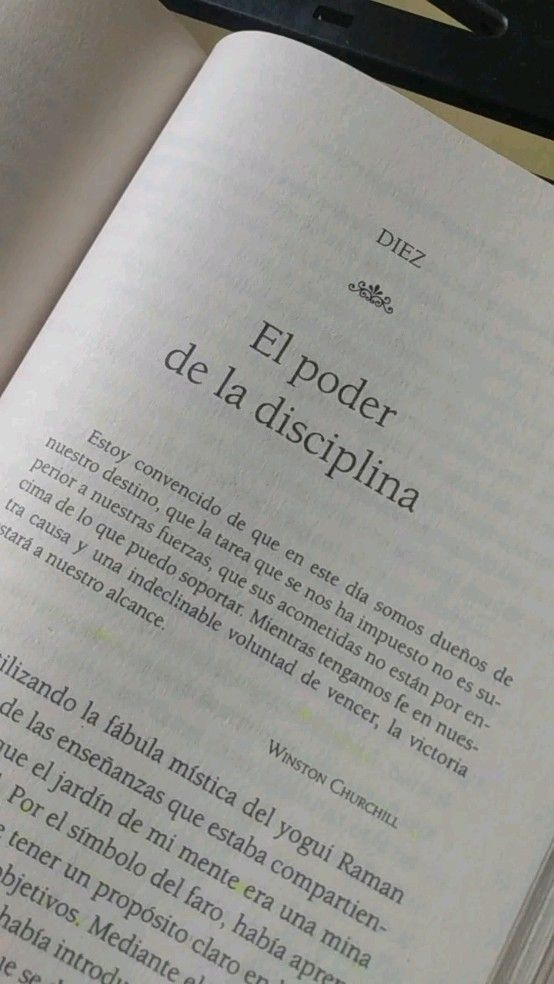
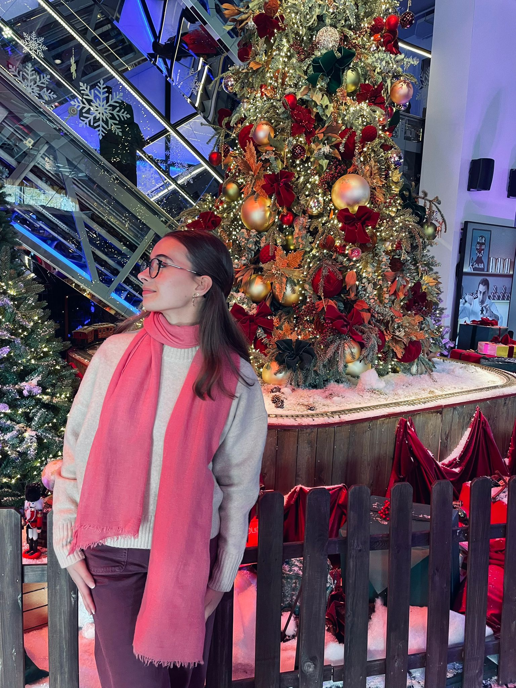
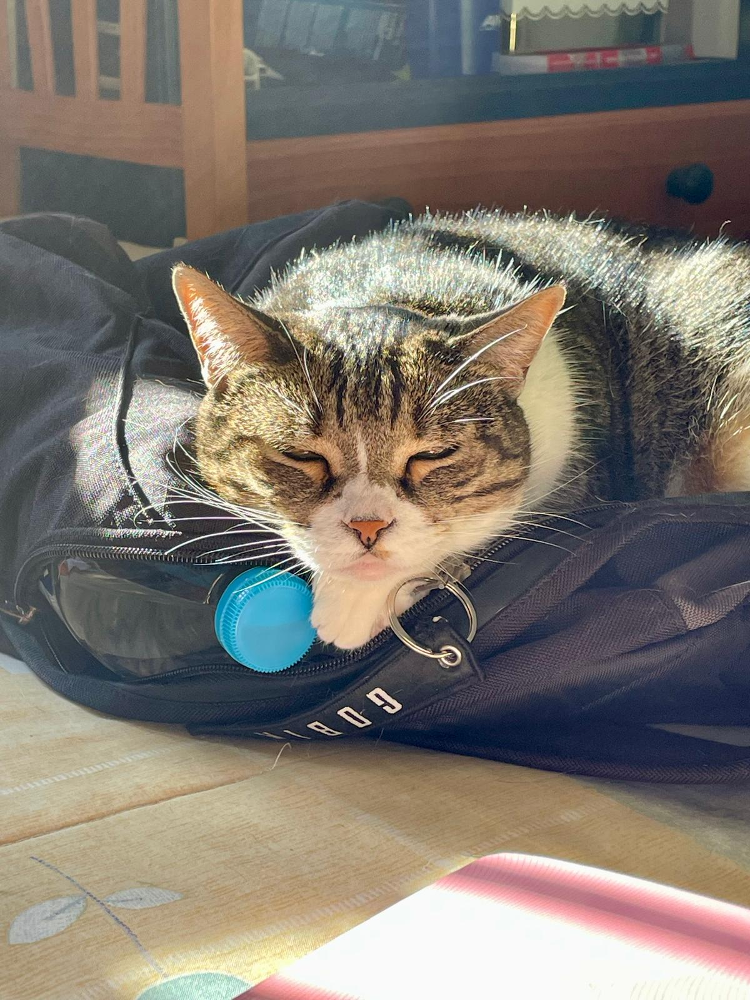
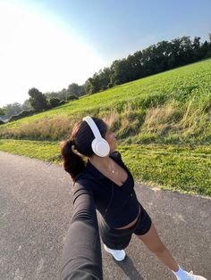

Escuchar música
salir a correr

quedar con mis amigas
|  |
"El esfuerzo que pongo hoy es el éxito que recogeré mañana" |
Sobre mí Hola!!! Me llamo Marta Muñoz , vivo en un pequeño pueblo de Jaén llamado Sabiote, y soy una alumna de 2º de bachillerato .
Me apasiona la ciencia y me encantaría poder dedicarme a ella en el futuro, ya que disfruto aprendiendo, investigando y entendiendo como funciona el mundo que nos rodea.
De hecho mis asignaturas favoritas son biología y química 🧬🔬🧪. |

Foto personal |

Imagen de mi mascota |
AficionesMe considero una persona muy básica en cuanto mis aficiones. Voy a compartiros algunas:
|
|
Escuchar música |
 salir a correr |
quedar con mis amigas |
Proyectos |
.jpg)
Club de teatro juvenil |

Asociación de pintura de Sabiote |
Además de mis estudios, dedico las tardes a desarrollar mi creatividad en actividades artísticas. Participo los martes y jueves por la tarde en un club de teatro juvenil, donde colaboro en la creación de proyectos escénicos, trabajo en equipo y exploro distintas formas de expresión corporal y emocional. Además, formo parte de una asociación de pintura, un espacio en el que experimento con técnicas artísticas y doy forma a mis ideas a través del color y la composición. Estas experiencias me han permitido crecer tanto a nivel personal como creativo, fomentando mi sensibilidad artística, mi disciplina y mi capacidad de compromiso. Visita aquí alguna de mis mejores obras |
| Proyecto | Objetivo a cumplir | Plazo |
| Club de teatro | Aprender a superar poco a poco mi miedo escénico | Febrero-abril |
| Asociación de pintura | Desarrollar la téctina de pintura al óleo |
Sitio web desarrollado por Marta Muñoz Ruiz, 2026
Contacto: mmunrui1303@g.educaand.es | Perfil en github